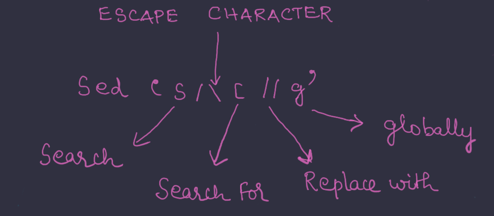
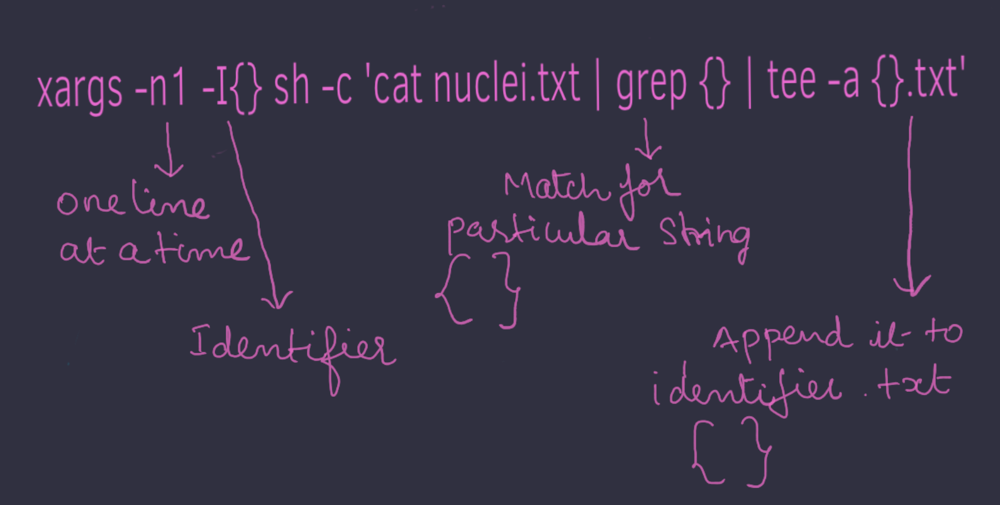

Hello everyone, in this blog we will be looking at how I found criticals on a private program using known vulnerabilities.
This is a private program and doesn't allow disclosure so let us assume that our target is *.redacted.com.
This is a wide scope target and all subdomains of redacted.com are in scope.
We can start by googling about the company. Usually upon googling a card element at the right side of search results containing a brief description about the company.This can help us get an overiew about the company and services might have which can help us find potential services that can be vulnerable.
Since this is a wide scope target we can start with subdomain enumeration. There are a lot of open source tools that we can use to get good amount of subdomains. Most of the times all of these subdomains are up or might resolve to some common domain. Lets us say we have all of these subdomains in a file called domains.txt.
I ran httpx to get live subdomains.
httpx -follow-host-redirects -l domains.txt | tee -a urls.txt
Sometimes this can contain duplicate urls. Which can be sorted by running sort -u urls.txt | tee -a urls.txt
Now we have a list of active subdomains after probing.
At this point, as mentioned in my previous blog, I was searching for keywords like internal, staging, stg, developer, admin, etc and started testing these manually.
While testing for these above found interesting subdomains manually, I ran nuclei on the urls to find tech stack it was using.
I have a directory named tech-exposures containing exposed-panels and technogies tempalates.
nuclei -l urls.txt -t /nuclei-templates/tech-exposures | tee -a nuclei.txt
cat nuclei.txt
Now categorise them into separate text files based on the stack detected.
cat nuclei.txt | cut -d ' ' -f3 | sed 's/\[//g' | sed 's/\]//g' | sed 's/tech-detect://g'| sort -u | xargs -n1 -I{} sh -c 'cat nuclei.txt | grep {} | tee -a {}.txt'
First let us discuss why do I do this then we will move on to break the command down into parts and understand how it works.
Reason behind sorting these is
If a particular subdomain is vulnerable to a particular vulnerability based on stack most likely others are also vulnerable.
When using tools like nuclei to scan for cves or vulnerabilities , we dont have to waste time and resources running unnecessary templates
Lets us the take the line [2021-04-27 18:11:10] [solr-exposure] [http] [medium] https://pre-prod.redacted.com/solr/
what cut -d ' ' -f3 does is it breaks down every line of the file at ' ' i.e space and gives out the 3rd field.Below is a image depicting the same.
What sed 's/\[//g' does to [tech-detect:ms-iis]?
This command searches for [ (\ escape character) and replaces it with nothing at all places.Below is a image depicting the same.
sort -utakes the list and gives outall uniqueitems from them.
xargs -n1 -I{} sh -c 'cat nuclei.txt | grep {} | tee -a {}.txt'
This takes one line at a time and searches for the particular line in nuclei.txt and appends the matched line to linename.txt
Now as we have urls for tech specific stack we can now not waste our time and resource by running all templates.
From here on it was mostly googling for known vulnerabilities , reports from hacktivity and CVE's on the same tech stack like CVE "keyword" (Eg : CVE solr, hackerone solr) to find CVEs and reports from hackerone hacktivity and find relevant exploits for the found CVE or reports from hackerone which got me my 3 RCEs (dupe ¯\(°_o)/¯) on a private program on Bugcrowd.
This is how I use nuclei to speedup my testing process and this doesnt eliminate the need for manual testing in any way. I highly suggest you to test all domains or atleast check what they are having there manually.
One common error that I have made in my past is overwriting existing files i.e I already had a file called nuclei.txt and erased its contect with new content. So,I highly suggest you to use almost always -a tag with tee as it doesnt overwrite but just appends it to existing file so no previous data is lost.
Even when using -a what if we had data of say redacted1.com in file.txt and we appended details of redacted2.com into the same file.
This can also be easily sorted out by running the following commands cat file.txt | grep 'redacted2.com' | tee -a redacted2.txt , cat file.txt | grep -v 'redacted2.com' | tee -a oldfile.txt and rm file.txt
Links to tools and websites I that helped me find and exploit my vulnerabilities
Hope you enjoyed reading this and if you have any suggestions related to this or want to discuss with me about some security related stuff feel free to contact me. HOME has my contact information.
HAPPY LEARNING and HAPPY HACKING !!!.